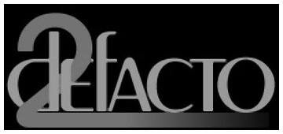

Defacto2 changes directionby IpggiYou may remember Defacto 2 as a scene magazine in late 1996, early 1997. Unfortunately the days of Defacto 2 as a scene magazine are over but Defacto 2 is far from dead. The same reliable coverage you came to expect for new events will now be directed on past ones. I have always felt that our scene lacked a sense of history. It's not that the history doesn't exist, it's just that trying to find the information is a difficult and often fruitless task. That's why I have always envisioned a web page dedicated to the PC scene of past. In two plus years of searching the web I have yet to fina a page dedicated to the PC pirate scene and it's history. Just visit Fairlight's European page for example. They have a section dedicated to C64, Amiga and the PC but the PC section remains empty. At the time of writing this www.defacto2.org is the only page/museum in the world strictly for the PC scene and to keep it alive I need people to send me everything they have which they believe could be useful for this page. If you have any old group NFOs, cracktros, intros, BBS adverts, famous BBS ANSI welcome screens, old scene magazines (No that does not mean RCN #1), etc. please email me at webmaster@defacto2.org. article and graphic by Ipggi |